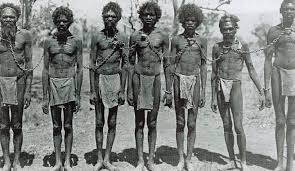
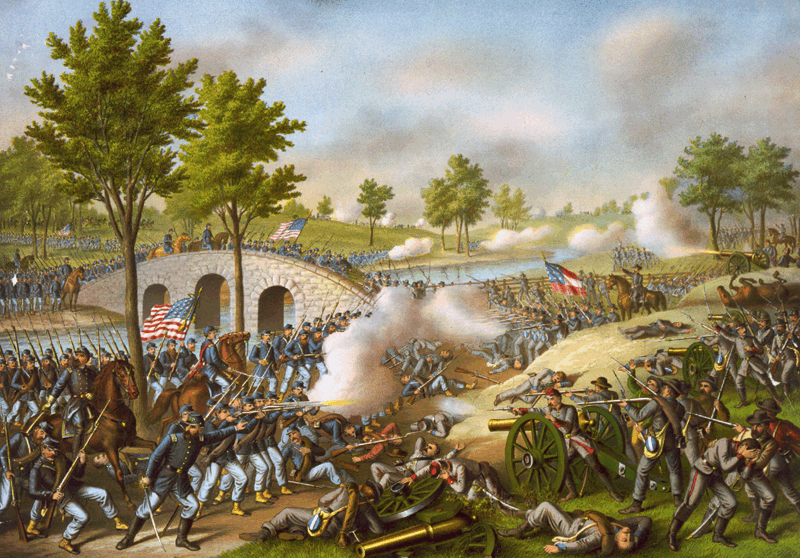

Înainte de Columbus
Era pre-columbiană este perioada în care Christopher Columb a mers în America în 1492. La vremea respectivă, americanii nativi locuiau pe terenul care este acum Statele Unite. Au avut diverse culturi: americanii nativi din Statele Unite ale Americii de Est au vânat vânat și cerb; Nativi americani din nord-vest au pescuit; Nativii americani din sud-vest au crescut porumbul și au construit case numite pueblos; și americanii nativi din câmpiile mari au vânat bivoli.În jurul anului 1000, mulți oameni cred că vikingii au vizitat Newfoundland. Cu toate acestea, nu s-au stabilit acolo
Sclavia
În 1861, peste trei milioane de afro-americani erau sclavi în sud. Aceasta înseamnă că au lucrat pentru alți oameni, dar nu au avut libertate și nu au primit bani pentru munca lor. Cele mai multe au lucrat cu bumbac pe plantații mari. Doar câțiva oameni albi din plantațiile deținute în sud. Cei mai mulți albi din sud nu aveau deloc sclavi. Cotton a devenit principala cultură din sud, după ce Eli Whitney a inventat ginul de bumbac în 1793. Au existat câteva răzvrătiri de sclav împotriva sclaviei, inclusiv una condusă de Nat Turner. Toate aceste revolte au eșuat. Sudul a vrut să păstreze sclavia, dar până la războiul civil, mulți oameni din nord au vrut să-l înceteze. Un alt argument între nord și sud a fost referitor la rolul guvernului. Sudul a vrut guverne mai puternice de stat, dar nordul a vrut un guvern central mai puternic.


Razboiul civil
În anii 1840 și 1850, oamenii din statele nordice și cei din statele sudice nu au fost de acord dacă sclavia a fost corectă sau rău în teritoriile - părți ale Statelor Unite care nu erau încă state.Oamenii din guvern au încercat să încheie contracte pentru a opri un război. Unele înțelegeri au fost Compromisul din 1850 și Legea Kansas-Nebraska, dar nu au lucrat cu adevărat pentru a ține Uniunea împreună. Oamenii din sud au fost supărați de cărți ca Cabina lui Unchiul Tom, care spuneau că sclavia era greșită. Oamenii din nord nu-i plăceau o hotărâre a Curții Supreme numită Dred Scott care îl ținea pe Scott un sclav. Oamenii din Sud și oamenii din Nord au început să se omoare în Kansas peste sclavie. Aceasta a fost numită "Sângerarea Kansas". Unul dintre oamenii din Bleeding Kansas, John Brown, a preluat un oraș din Virginia în 1859 pentru a face o idee despre faptul că sclavia a greșit și a încerca să-i facă pe sclavi să-și lupte cu proprietarii lor